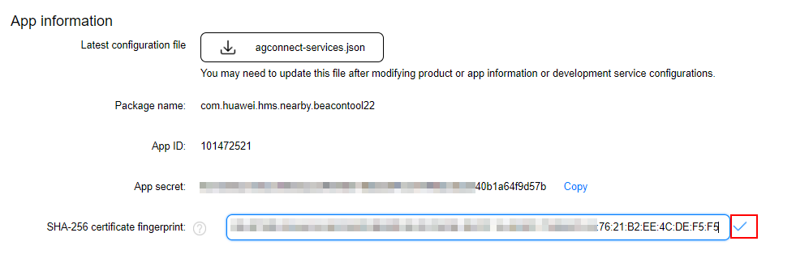
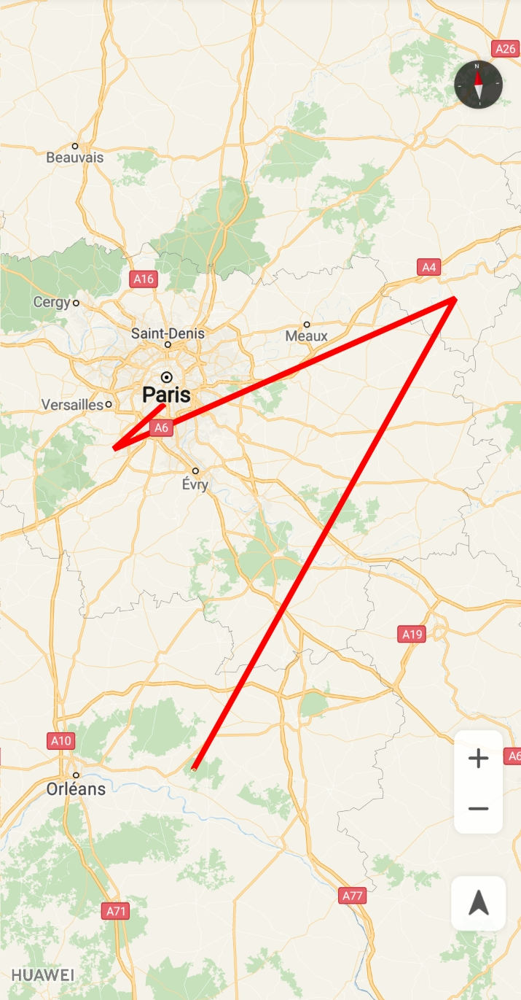

Map Kit Developer Guides for ReactNative
1 Preparations
Configuring App Information in AppGallery Connect
Before you start developing an app, configure app information in AppGallery Connect.
1 Registering as a Developer
Before you get started, you must register as a HUAWEI developer and complete identity verification on the HUAWEI Developer website. For details, please refer to Register a HUAWEI ID.
2 Creating an App
Create an app by referring to Creating an App at the AppGallery Connect help center. Set the following parameters as described:
Package type: APK (Android app)
Devices: Mobile phone
App category: App
3 Generating a Signing Certificate Fingerprint
A signing certificate fingerprint is used to verify the authenticity of an app when it attempts to access an HMS Core service through the HMS SDK. Before using the HMS Core service, you must locally generate a signing certificate fingerprint and configure it in AppGallery Connect.
Please ensure that the following conditions are met:
You have created the app's signature file. For details, please refer to Generating a Signing Certificate.
The JDK has been installed on your PC.
!!!!! TODO OTHER PREPARATIONS
You can use the keytool tool in the JDK package to generate fingerprints as follows:
- Open the command line tool and run the following command, in which
is the complete path to the app's signature file:
keytool -list -v -keystore <keystore-file>- Obtain the SHA-256 fingerprint from the result. An example of the result is as follows:
Alias name: <alias-name> Creation date: Aug 29, 2019 Entry type: PrivateKeyEntry Certificate chain length: 1 Certificate[1]: Owner: CN=Android Debug, OU=hua, C=zg Issuer: CN=Android Debug, OU=hua, C=zg Serial number: 1e46890c Valid from: Thu Aug 29 21:09:44 CST 2019 until: Mon Jan 14 21:09:44 CST 2047 Certificate fingerprints: MD5: EC:29:9E:ED:18:35:E0:A0:93:EA:AD:E2:D9:4D:B7:6A SHA1: E6:6B:61:C9:E5:86:81:E7:3A:7A:86:11:87:FB:DD:B6:2F:72:9D:80 SHA256: 39:B1:5E:52:70:8C:07:6D:5A:F7:0B:96:8B:D1:77:A0:8F:CA:09:08:72:90:FD:2A:1E:DB:9A:6C:2F:4E:B5:97 Signature algorithm name: SHA256withRSA Subject Public Key Algorithm: 2048-bit RSA key Version: 3
4 Configuring the Signing Certificate Fingerprint
Sign in to AppGallery Connect and select My apps.
Find your app from the list and click it.
Go to Develop > Overview > App information and set SHA-256 certificate fingerprint to the SHA-256 fingerprint that is generated in the preceding section of Generating a Signing Certificate Fingerprint.

- After completing configuration, click ✓.
5 Enabling Required Services
To use Map Kit, enable it in AppGallery Connect.
For details, please refer to Enabling Services.
I assume you have created an App at AppGallery Connect and enabled Map Kit APIs.
https://developer.huawei.com/consumer/en/doc/development/HMS-Guides/hms-map-v4-configuringinagc
1.1 Preparing the Development Environment
- Node.JS (and npm) should be installed. You can download and install from NodeJS offical site Preferably select LTS version of Node.
- Android SDK should be installed. (Preferably Android Studio) You can download and install from Android Studio offical site Android Studio automaticly download Android SDK and other required tools.
- Platform-tools and build-tools of the Android SDK should be added to the $PATH variable.
- Developer Mode should be enabled on your phone, and debug option should be enabled.
1.2 Integrating the HMS SDK
_integratingHMSSDK !!! TODO
https://developer.huawei.com/consumer/en/doc/development/HMS-Guides/hms-map-v4-integratingthehmssdk FOR REACT-NATIVE
2 Adding Permissions
To call capabilities of HUAWEI Map Kit, you must apply for the following permissions for your app:
<uses-permission android:name="android.permission.INTERNET"/>
<uses-permission android:name="android.permission.ACCESS_NETWORK_STATE"/> To obtain the current device location, you need to add the following permissions in the AndroidManifest.xml file. In Android 6.0 and later, you need to apply for these permissions dynamically.
<uses-permission android:name="android.permission.ACCESS_COARSE_LOCATION"/>
<uses-permission android:name="android.permission.ACCESS_FINE_LOCATION"/>3 Creating a Map
https://github.com/react-native-community/react-native-maps
General Usage
import MapView from 'react-native-hms-map';or
var MapView = require('react-native-hms-map');This MapView component is built so that features on the map (such as Markers, Polygons, etc.) are specified as children of the MapView itself. This provides an intuitive and react-like API for declaratively controlling features on the map.
Rendering a Map with an initial region
<MapView
initialRegion={{
latitude: 37.78825,
longitude: -122.4324,
latitudeDelta: 0.0922,
longitudeDelta: 0.0421,
}}
/>Using a MapView while controlling the region as state
getInitialState() {
return {
region: {
latitude: 37.78825,
longitude: -122.4324,
latitudeDelta: 0.0922,
longitudeDelta: 0.0421,
},
};
}
onRegionChange(region) {
this.setState({ region });
}
render() {
return (
<MapView
region={this.state.region}
onRegionChange={this.onRegionChange}
/>
);
}3.1 Interacting with a Map
https://developer.huawei.com/consumer/en/doc/development/HMS-Guides/hms-map-v4-mapinteraction
3.2 Drawing on a Map
https://developer.huawei.com/consumer/en/doc/development/HMS-Guides/hms-map-v4-drawonthemap
1 Overview
This section describes how to draw markers, ground overlays, and shapes on a map. For details, please refer to files such as MarkersExample.js, PolygonsExample.js, PolylinesExample.js, CirclesExample.js, OverlaysExample.js in the sample code project. Click here to download sample code.
2 Components
2.1 Marker Component
You can add markers to a map to identify locations such as stores and buildings, and provide additional information with information windows.
2.1.1 Adding a Marker
The following code segment uses the default icon to add a simple marker on a map:
import {Marker} from 'react-native-hms-map';
...
<Marker
coordinate={{latitude: 41.0083, longitude: 28.9784}}
title={'Hello Huawei Map'}
...
/>You can use custom images to replace default icons or modify marker attributes to change the marker icons. The following table lists the marker attributes that can be customized.
Props
| Prop | Type | Default | Remarks |
|---|---|---|---|
title |
String |
- | The title of the marker. This is only used if the <Callout />, in which case the default callout behavior will be used, which will show both the title and the description, if provided. |
description |
String |
- | The description of the marker. This is only used if the <Callout />, in which case the default callout behavior will be used, which will show both the title and the description, if provided. |
image |
ImageSource |
- | A custom image to be used as the marker's icon. Only local image resources are allowed to be used. |
icon |
ImageSource |
- | Marker icon to render (equivalent to icon property of GMSMarker Class). |
pinColor |
Color |
- | If no custom marker view or custom image is provided, the platform default pin will be used, which can be customized by this color. Ignored if a custom marker is being used. For Android, the set of available colors is limited. Unsupported colors will fall back to red. See #887 for more information. |
coordinate |
LatLng |
- | The coordinate for the marker. |
centerOffset |
Point |
(0, 0) | The offset (in points) at which to display the view. By default, the center point of an annotation view is placed at the coordinate point of the associated annotation. You can use this property to reposition the annotation view as needed. This x and y offset values are measured in points. Positive offset values move the annotation view down and to the right, while negative values move it up and to the left. For Google Maps, see the anchor prop. |
calloutOffset |
Point |
(0, 0) | The offset (in points) at which to place the callout bubble. This property determines the additional distance by which to move the callout bubble. When this property is set to (0, 0), the anchor point of the callout bubble is placed on the top-center point of the marker view’s frame. Specifying positive offset values moves the callout bubble down and to the right, while specifying negative values moves it up and to the left. For Google Maps, see the calloutAnchor prop. |
anchor |
Point |
(0.5, 1) | Sets the anchor point for the marker. The anchor specifies the point in the icon image that is anchored to the marker's position on the Earth's surface. The anchor point is specified in the continuous space [0.0, 1.0] x [0.0, 1.0], where (0, 0) is the top-left corner of the image, and (1, 1) is the bottom-right corner. The anchoring point in a W x H image is the nearest discrete grid point in a (W + 1) x (H + 1) grid, obtained by scaling the then rounding. For example, in a 4 x 2 image, the anchor point (0.7, 0.6) resolves to the grid point at (3, 1). For MapKit on iOS, see the centerOffset prop. |
calloutAnchor |
Point |
(0.5, 0) | Specifies the point in the marker image at which to anchor the callout when it is displayed. This is specified in the same coordinate system as the anchor. See the anchor prop for more details.The default is the top middle of the image. For MapKit on iOS, see the calloutOffset prop. |
flat |
Boolean |
false | Sets whether this marker should be flat against the map true or a billboard facing the camera. |
identifier |
String |
- | An identifier used to reference this marker at a later date. |
rotation |
Float |
0 | A float number indicating marker's rotation angle, in degrees. |
draggable |
<null> |
- | This is a non-value based prop. Adding this allows the marker to be draggable (re-positioned). |
tracksViewChanges |
Boolean |
true | Sets whether this marker should track view changes. It's recommended to turn it off whenever it's possible to improve custom marker performance. |
tracksInfoWindowChanges |
Boolean |
false | Sets whether this marker should track view changes in info window. Enabling it will let marker change content of info window after first render pass, but will lead to decreased performance, so it's recommended to disable it whenever you don't need it. Note: iOS Google Maps only. |
stopPropagation |
Boolean |
false | Sets whether this marker should propagate onPress events. Enabling it will stop the parent MapView's onPress from being called. Note: iOS only. Android does not propagate onPress events. See #1132 for more information. |
opacity |
Float |
1.0 | The marker's opacity between 0.0 and 1.0. |
isPreselected |
Boolean |
false | When true, the marker will be pre-selected. Setting this to true allows the user to drag the marker without needing to tap on it once to focus on it. Note: iOS Apple Maps only. |
Events
To access event data, you will need to use e.nativeEvent. For example, onPress={e => console.log(e.nativeEvent)} will log the entire event object to your console.
| Event Name | Returns | Remarks |
|---|---|---|
onPress |
{ coordinate: LatLng, position: Point } |
Callback that is called when the user presses on the marker |
onSelect |
{ coordinate: LatLng, position: Point } |
Callback that is called when the user selects the marker, before the callout is shown. Note: iOS only. |
onDeselect |
{ coordinate: LatLng, position: Point } |
Callback that is called when the marker is deselected, before the callout is hidden. Note: iOS only. |
onCalloutPress |
| Callback that is called when the user taps the callout view. | |
onDragStart |
{ coordinate: LatLng, position: Point } |
Callback that is called when the user initiates a drag on this marker (if it is draggable) |
onDrag |
{ coordinate: LatLng, position: Point } |
Callback called continuously as the marker is dragged |
onDragEnd |
{ coordinate: LatLng, position: Point } |
Callback that is called when a drag on this marker finishes. This is usually the point you will want to setState on the marker's coordinate again |
Methods
| Method Name | Arguments | Remarks |
|---|---|---|
showCallout |
| Shows the callout for this marker | |
hideCallout |
| Hides the callout for this marker | |
redrawCallout |
| Causes a redraw of the marker's callout. Useful for Google Maps on iOS. Note: iOS only. | |
animateMarkerToCoordinate |
coordinate: LatLng, duration: number |
Animates marker movement. Note: Android only |
redraw |
| Causes a redraw of the marker. Useful when there are updates to the marker and tracksViewChanges comes with a cost that is too high. |
Types
type LatLng {
latitude: Number,
longitude: Number,
}type Point {
x: Number,
y: Number,
}!! TODO The following code segment creates a marker with a custom image: ....
!!! TODO about anchor point settings, please refer to the Marker.setAnchor(float anchorU, float anchorV) method.
!!! TODO
Marker onPress Event
You can use onPress event to listen for marker tap events. The default action for a marker tap event is to display the information window (if available) of the marker and center the marker on the map.
TODODrag Event
You can use onDragStart, onDrag and onDragEnd event to listen for marker tap events. To drag a marker, a user needs to long press it, drag it to the specified position on the screen, and drop it. When the user starts dragging the marker, onDragStart is called. When the user drags the marker, onDrag is called repeatedly. When the user stops dragging the marker, onDragEnd is called.
TODOSetting Information Windows (Supports partially)
An information window is displayed above a marker to provide detailed marker information through text or an image.
Adding an Information Window
The easiest way to add an information window for a marker is to set the title and description props of the related Marker object. If a user taps the marker, the information window is then displayed.
TODOAdding Shape
With the HMS Core Map SDK, you can add different shapes to a map, including polylines, polygons, circles and overlays.
Adding Polyline
A polyline consists of several ordered LatLng type.
The sample code is as follows:
TODOListen for polyline tap events
TODO
Adding Polygon
Similar to a polyline, a polygon consists of a group of ordered coordinates. However, a polygon is a closed area.
The sample code is as follows:
TODOListen for polyline tap events
`js
TODO

4 API References
5 Examples
This section provides links to sample code on GitHub. Currently, the sample code of the SDK for Android is provided, covering the usage of most APIs. In the sample code, you can find many code snippets used in the development guide.
Notice： If the map displays only empty tiles after you install the sample code on your smartphone, you need to configure an agconnct-services.json file and signing certificate. For details, please refer to Preparations.